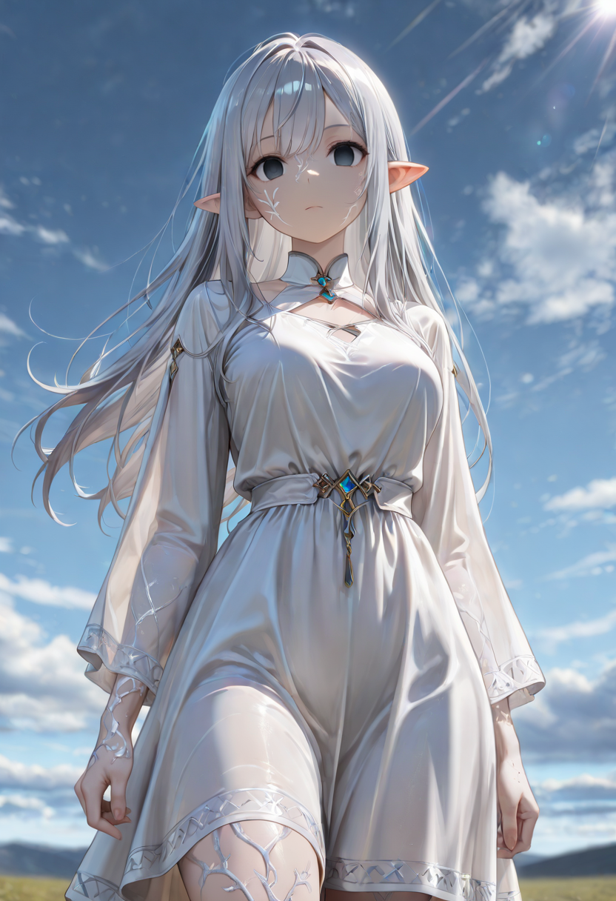
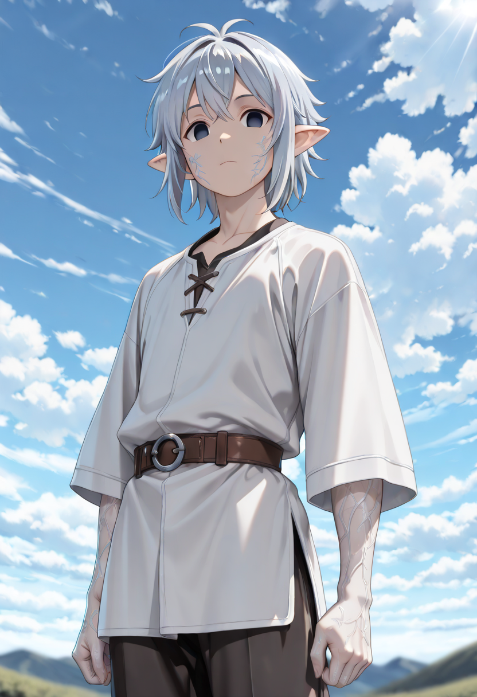

Between Two Deaths
No one escapes Malicott's empire. The forest does not have exits, and the Mother Tree does not forget those who have drunk from her roots. The Forgotten call them Defectors not because they fled, but because of the choice they made when the silver disease first took hold — they refused the next step. They wanted to stay infected. They chose the sickness over the transformation it was meant to complete.
The silver disease does not kill, and it does not stop. Without Malicott's intervention to guide it toward rebirth, it simply continues — corroding slowly, never finishing, turning the body into something that cannot properly die and cannot properly live. Defectors carry that corrosion willingly. Whether out of fear of what the transformation would make them, or out of a defiant wish to remain halfway human, they made a choice that the rest of the Forgotten find difficult to name without contempt.
They are bitter in the way that only half-things can be bitter. The empire will not take them back — the silver marks on their skin mark them as corrupted, unfinished, unsafe. The Forgotten have no place for those who refused the root. And so they exist in the margins, hostile to both, belonging to neither. The forest watches them with something that, if pressed, Malicott might describe as grief.